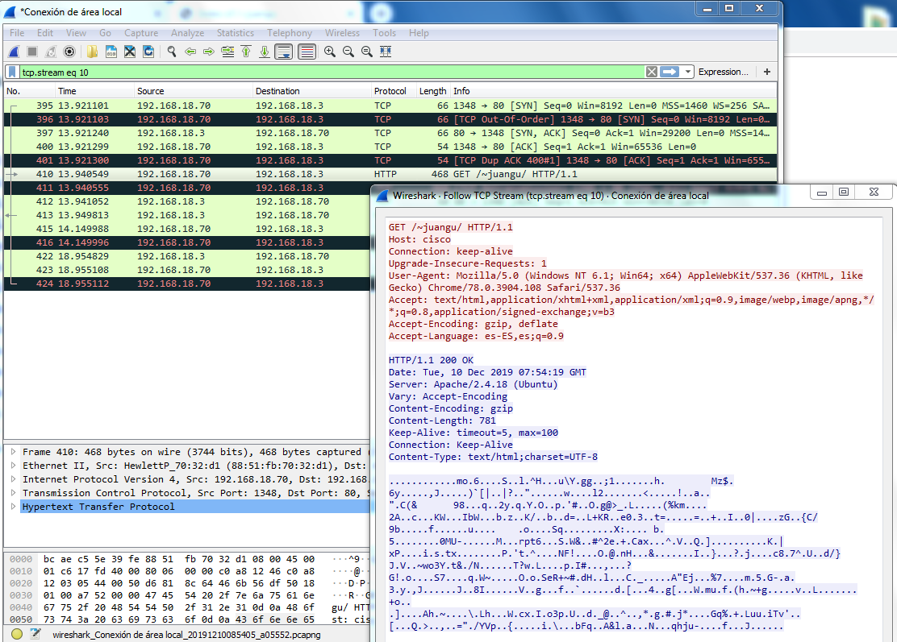
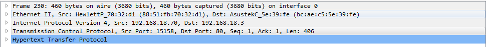
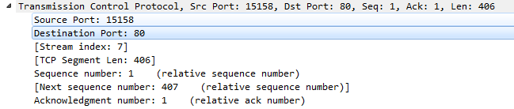
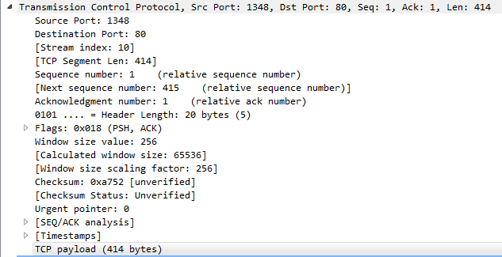
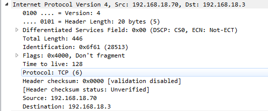

1. Lanza el sniffer wireshark y realiza una petición web.
2. ¿Qué protocolos de transporte, red y enlace utiliza HTTP?
3. ¿Qué puertos están implicados en la capa de transporte?
¿Qué otros datos puedes obtener de esta capa?
¿Cuáles son la direcciones IP implicadas en dicha petición? ¿A quién corresponden? ¿Qué otros datos puedes obtener de esta capa?
¿Cuáles son la direcciones LAN implicadas en dicha petición? ¿A quién corresponden? ¿Qué otros datos puedes obtener de esta capa? Calcula el tamaño del payload de cada capa.

¿Qué protocolo se utiliza HTTP/1.0 o HTTP/1.1?

Filtrando TCP, busca el acuerdo en tres bandas entre cliente y servidor. Interprétalo.